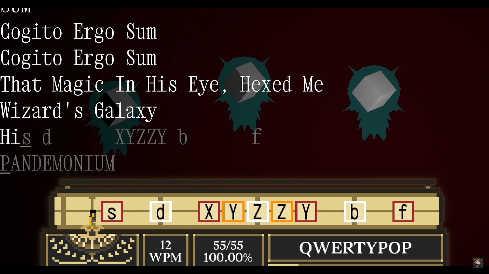
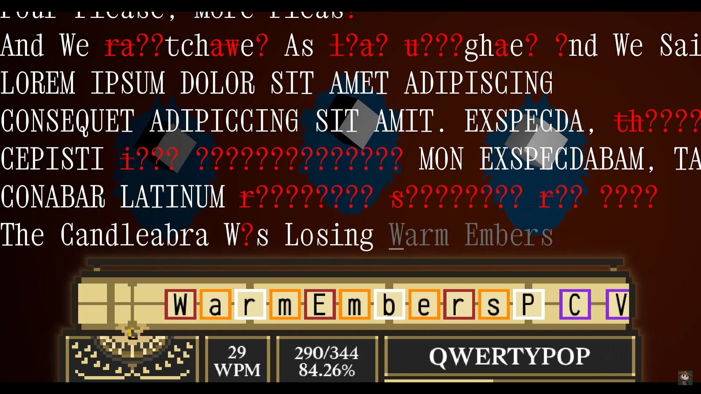

projects
here's a rough list of all of the things that i have done through my game development career.
toontown: corporate clash - october 2020 to october 2023
game website: https://corporateclash.net/. it's kind of ugly sorryi've been doing volunteer work for the toontown corporate clash crew for a very long time. i've gone through several positions on the team, doing a lot of lead development and higher-level management. one can find a full timeline and list of positions over on my linkedin (see my contact section).
while on the project, i developed a large amount of features, systems, and tools. my main priorities lived in developing tools and interfaces for players and developers alike. a few examples of my contributions to the project:
- an updated and improved friends list
- a game-wide group tracker for organizing boss raids with friends or strangers
- an in-game guilds system, with progression, objectives, ranks, and upgrades for large communities
- a new pipeline for quickly developing ui for in-engine use (check out a development video here!)
- a complete rewrite of the game's questing backend
- an in-engine movie maker, which has been used to create over 100 cutscenes and several trailer shots (including ones used for our Makeship plushie promotion -- check this link out)
- battle mechanics, animations, sound design, and technical art for several bosses (rainmaker, chainsaw consultant, pacesetter, and many more)
- many battle themes and motifs, several being the most popular themes in the game (examples: 01 02 03)
dog game - april 2020 to present
dog game is a long-term JRPG project for me, one that i'm currently persuing in private. its intent is to explore the kinds of vast worlds you would find exclusively online, and introduce people to what it would be like to live in a weird fantasy world and society, one that actually exists.yes it is called dog game.

qwertypop - march 2023 to june 2023
here is an extremely weird and awesome typing rhythm game demo i made for a graphics class project. it was nominated as the best game in that class. i remember one of the judges for it was an executive over at pipeworks, which i thought was super cool. the programming, art, and music in the demo was all done independently by me.check out a video of it here.
 
golf 2 - july 2021
i was the game director for a team of me and around 7 friends for gmtk2021. after eon's of no updates, washed-up Golf� World Champion Hudson Buttermilk seeks out a new game...play here: https://micman27.itch.io/golf-2
github: https://github.com/thejanjan/gmtk-2021


meet the world's first(?) golf roguelike. playing as a golf kart, Hudson is chained to you, brandishing a golf club that allows you to get only the most impressive of golf shots. after making several sufficient putts, you can move to the next hole. each stage contains several powerups to help you deal with the onslaught of golf-based enemies.
our team placed #116 overall, from #5,724 entries. fun was a solid #81th place!
wondertown - may 2022
github: https://github.com/thejanjan/wondertownme and my online friends bonded over a certain puzzle game series: Wonderland. created by midnight synergy, this shareware masterpiece was a fantastic, colorful sokoban with several elements that kept the game light-hearted and super fun. my friends and i still LOVE the game series, so i figured it was high time one of us made it so we could play the vast suite of custom levels in multiplayer, right?


this godot project is still in its infancy with lots of bugs -- but the system it boasts are wildly successful for creating distributed elements within a puzzle game, which i am very proud of. i consider it to be a testament to how my experience with creating multiplayer games and distributed systems has expanded over the years, especially since this was my first godot project ever (!!!).
i haven't persued development on it in a while, since i've been focusing much more on other projects. it was an exciting challenge to create something of this caliber as an engine starter project, though.
REALLY OLD STUFF - 2008 to 2021
i honestly can't remember when i started using gamemaker. but it was such a long time ago, that's for sure.to tell you the truth, i have an unbelievable amount of projects over this decade. i was always super excited to try out new things at this time, and so i would get several starts on several potential projects just to learn something new... but then never do the actual difficult part of game development (fleshing a thing out to completion).
so in lieu of that, i'll at least present a few things that i do have catalogued still. apologies for no download links.
(and for reference, i was born in 2002, so a lot of these were made when i was really quite young!)
various platformers (201X to 2016)


i was a big fan of the platformer games that the folks in my community would develop, to the point that i really was eager to try and create games inspired by them. while for a long time most of my projects were either low-quality or weren't very successful, a lot of my friends started to find a lot of investment in my own work, which was satisfying.
epigam dungeons (november 2014)


probably my first time delving deep into dungeon generation and roguelike development. i found binding of isaac to be a very interesting and addicting experience, so i attempted to make a game to imitate it.
it was really difficult to get things going, but i really enjoyed working on the dungeon generation; i was pretty much hooked on procedural generation and randomness design going forward.
protect the orb (december 2014)


an arcade-based shoot-em-up. weapons and accessories are chosen from the menu screen as shown, and you then have to use these weapons while levelling up and upgrading your own stats to deal with the increasing enemy horde.
i was a big fan of my upgrade and equip system at the time, all of the weapons i made felt pretty unique, and certain hat/glasses combos would synergize in neat ways.